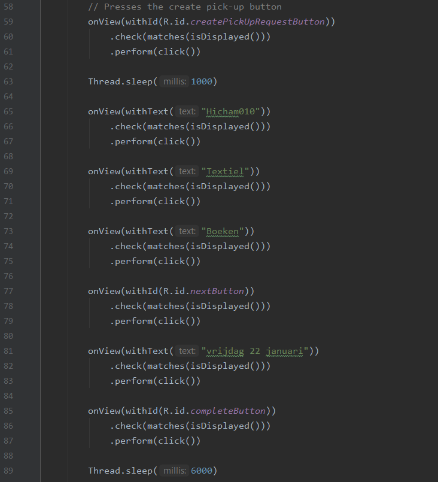
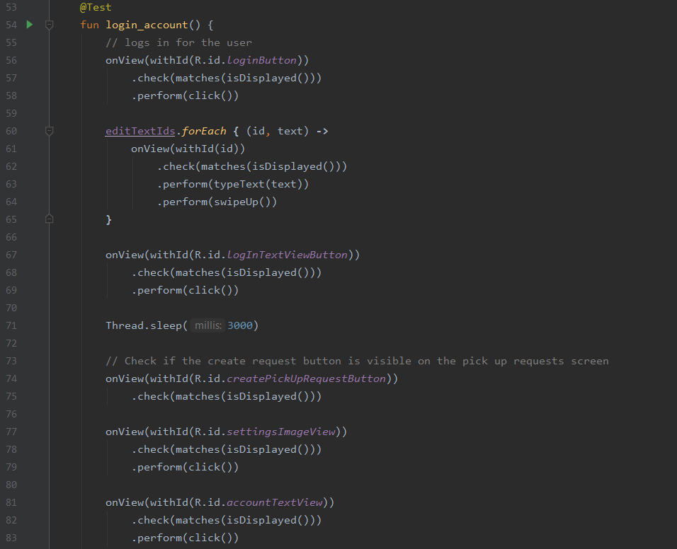
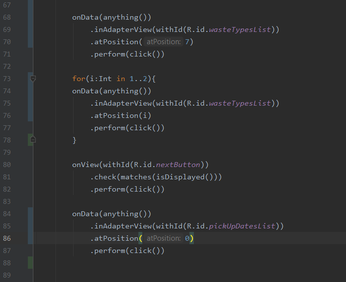
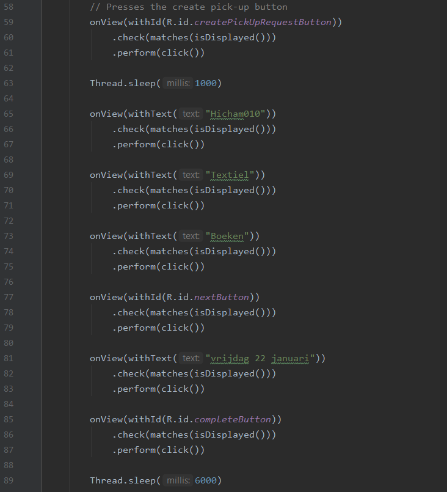
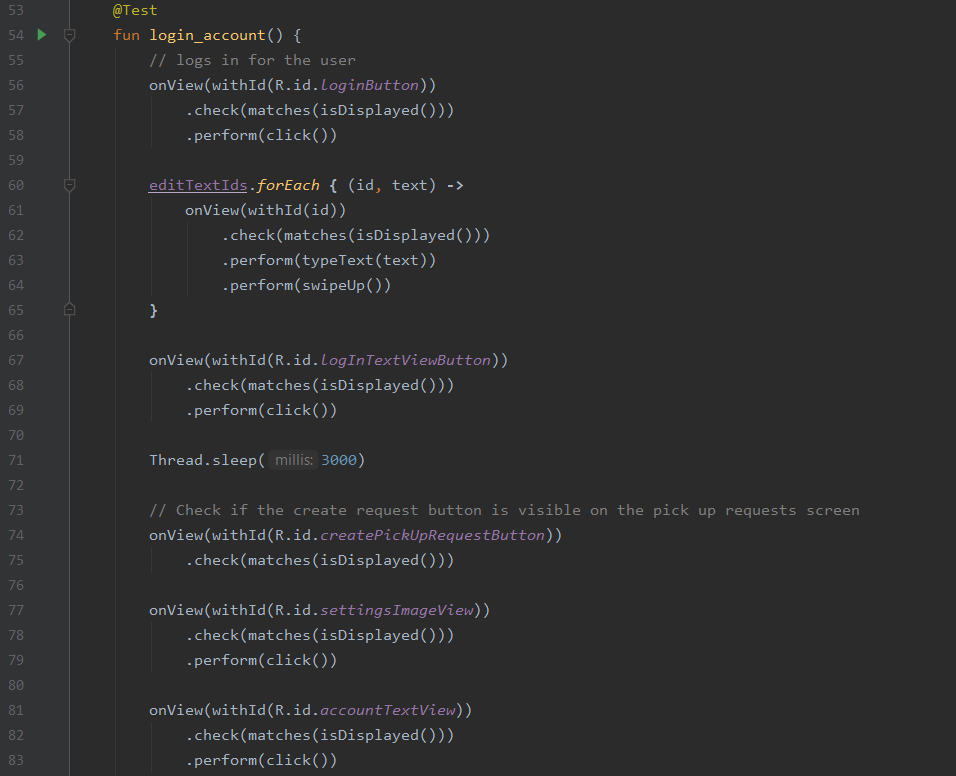

Ontwerpen
Leerdoel 1:
Ik wil een gebruiksinterfacetest Ontwerpen dat voldoet aan de kwaliteitseisen van het bedrijf en het vakgebied.
Bewijslast
Ik heb voor dit leerdoel twee gebruikersinterfacetesten gemaakt. Voor de eerste test heb ik het inloggen en uitloggen voor de gebruiker en afvalverzamelaar getest. Voor de tweede test heb ik voor de gebruiker getest of het mogelijk is om een ophaalverzoek te maken. Ik zal als bewijslast een aantal codesnippets laten zien van beide testen. Het handige van deze testen is dat het ook meteen visueel zichtbaar is of ze doen wat er gevraagd wordt. Ik heb daarom ook twee schermopnames van deze testen gemaakt, die hieronder te zien zijn.

Figuur 1

Figuur 2

Figuur 3

Figuur 4
Feedback en Zelfreflectie
Ik heb mijn feedback gekregen tijdens een zoomgesprek met een van mijn collega’s. De feedback die ik kreeg was dat ik het systeem moest stoppen op plekken waar er informatie gevraagd of gestuurd moet worden naar het database, dit is in mijn geval het inloggen en het creëren van de ophaalverzoek. Dit moet gedaan worden omdat de code natuurlijk sneller is dan de internetverbinding met het database, en als dit niet gedaan wordt kan dit leiden tot een error. In de code is dit te zien bij “Thread.sleep” waar je het systeem handmatig laat pauzeren. Dit is een feedbackpunt dat ik heb gekregen voor beide van mijn testen. Voor de login en log uit test heb ik niet meer feedback gekregen aangezien dit een vrij simpele test is. Voor het aanmaken van de ophaalverzoek heb ik wel een belangrijk punt gekregen dat is dat ik niet moet testen op unieke situaties. Dit houdt in dat de test altijd te gebruiken is zonder dat er weer strings veranderd moeten worden om het te laten werken. Omdat in de huidige test vraag ik om op een specifieke datum en afvalverzamelaar te klikken. Als deze zelfde test een week later gebruikt moet worden zou het niet meer werken, als deze strings niet worden aangepast. Ik heb daarom de code veranderd met de volgende aanpassing (figuur 5). Ik gebruik nu de onData-functie om mijn test uit te voeren.

Figuur 5
Ik heb voor dit leerdoel twee gebruikersinterfacetesten gemaakt. Voor de eerste test heb ik het inloggen en uitloggen voor de gebruiker en afvalverzamelaar getest. Voor de tweede test heb ik voor de gebruiker getest of het mogelijk is om een ophaalverzoek te maken. Ik zal als bewijslast een aantal codesnippets laten zien van beide testen. Het handige van deze testen is dat het ook meteen visueel zichtbaar is of ze doen wat er gevraagd wordt. Ik heb daarom ook twee schermopnames van deze testen gemaakt, die hieronder te zien zijn.

